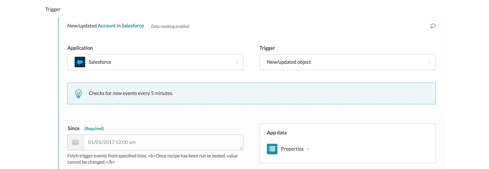
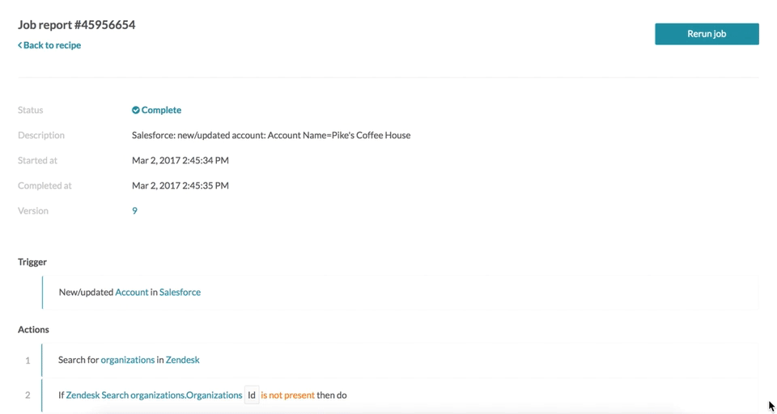
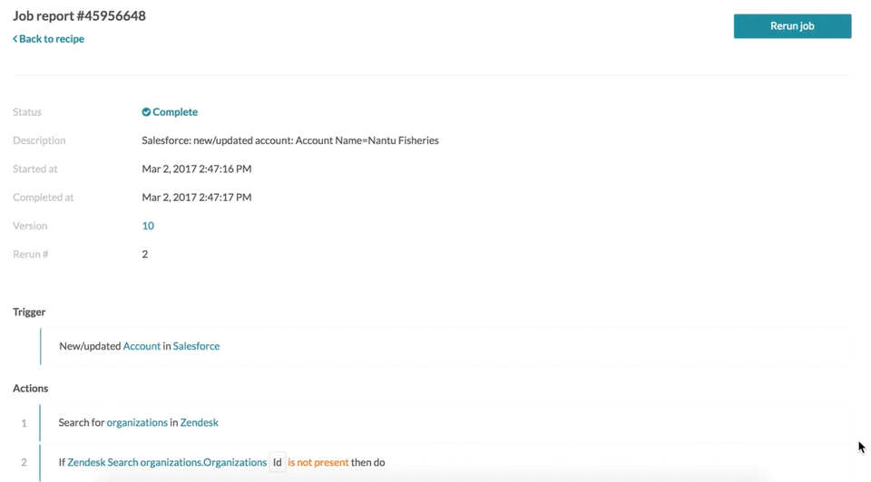

Data masking
Workato job history stores data going in and out of every recipe step. In certain use cases there may be sensitive information e.g. employee SSN, date of birth, etc. that should not be visible to Workato account admins.
Data masking enables users to disable display of data at the step level. i.e. users can control display of job history data at every step.
Its important to understant that even when data masking is enabled, data for this step is actually stored within Workato, it is just disabled for display purposes.
From a security standpoint, Workato stores all customer data in encrypted form.
Data masking is only available for certain plans. Check the Pricing and Plans page or reach us at +1 (844) 469-6752.
Enable data masking
Data can be masked for individual recipe steps, and both input and output data display will be disabled in he job history. To turn off display of this data as part of job history, you will need to check the Enable data masking field, found under the Comment section for each recipe step.
The following shows enabled data masking for the Salesforce new account trigger.
 Enabling data masking. Example recipe
The following shows job history before data masking.
 Job detail before masking. Example recipe
The following shows job history after data masking.
 Job details after masking. Example recipe